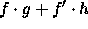
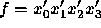

Common manipulations of BDDs can be accomplished by calling Cudd_bddIte. This function takes three BDDs, f, g, and h, as arguments and computes . Like all the functions that create new BDDs or ADDs, Cudd_bddIte returns a result that must be explicitly referenced by the caller. Cudd_bddIte can be used to implement all two-argument boolean functions. However, the package also provides Cudd_bddAnd as well as the other two-operand boolean functions, which are slightly more efficient when a two-operand function is called for. The following fragment of code illustrates how to build the BDD for the function .
DdManager *manager;
DdNode *f, *var, *tmp;
int i;
...
f = Cudd_ReadOne(manager);
Cudd_Ref(f);
for (i = 3; i >= 0; i--) {
var = Cudd_bddIthVar(manager,i);
tmp = Cudd_bddAnd(manager,Cudd_Not(var),f);
Cudd_Ref(tmp);
Cudd_RecursiveDeref(manager,f);
f = tmp;
}
This example illustrates the following points:
f = tmp;
Cudd_Ref(f);
Cudd_RecursiveDeref(manager,tmp);
but is more efficient. The reference is
``passed" from tmp to f, and tmp is now ready to
be reutilized.